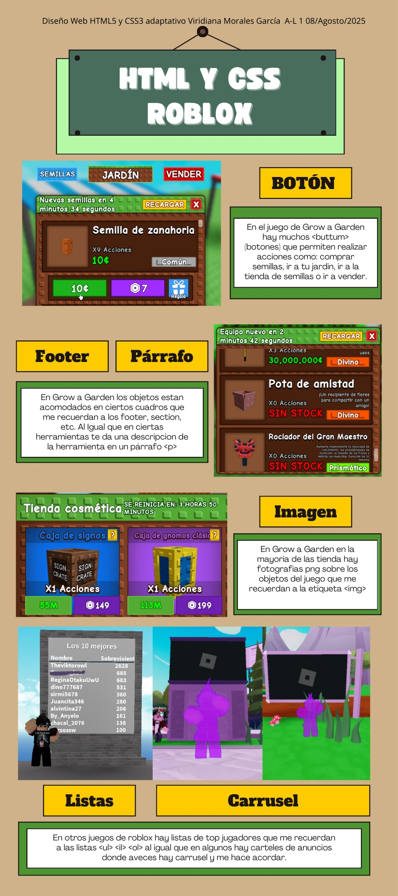
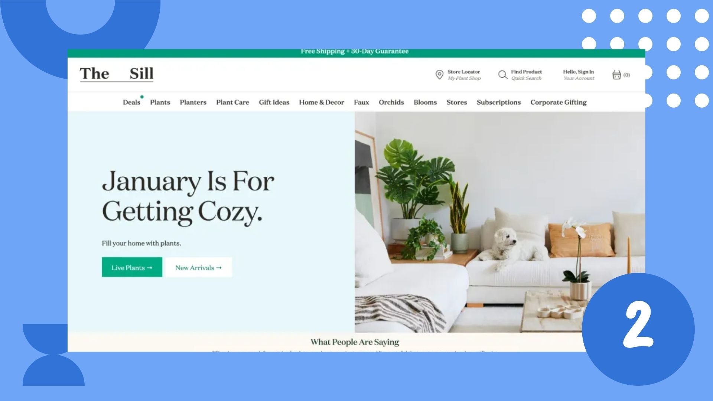
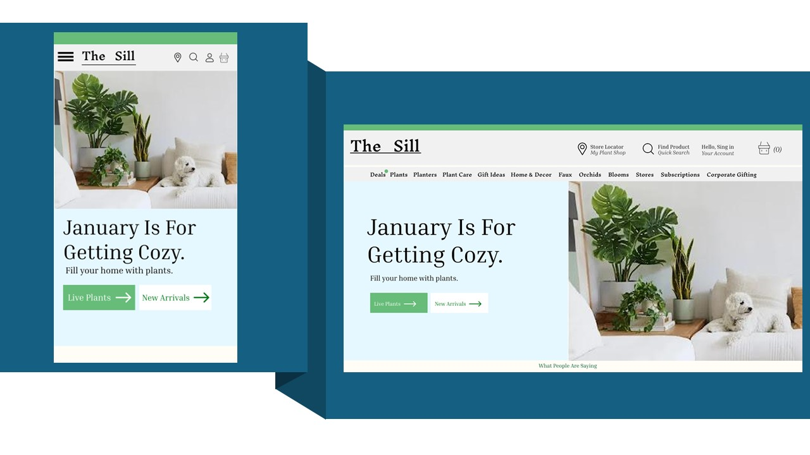
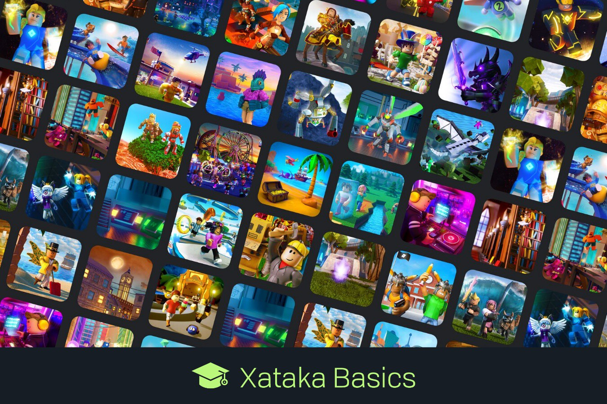
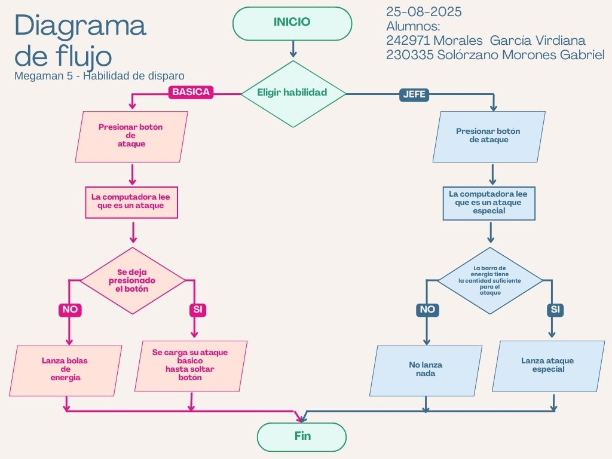

Mi nombre es Viridiana Morales García, mi matricula es: 242971 y esta es mi bitacora durante el semestre Agosto-Diciembre_2025
El primer tema visto en clase fue realizar una infografia sobre temas vistos el semestre pasado, en equipos dijimos cuales etiquetas recordamos y a que nos recordaba de manera sencilla, yo elegi Roblox por que es un juego que me gusta mucho.

El segundo tema visto el de recrear una pagina web que el profesor asigno aqui estan las comparativas de las paginas.


En este tema mostrare los significados de DOM, DOM CSS, DOM eventos y el DOM de animaciones. De un trabajo que se hizo en equipo para sacar sus definiciones
Sus siglas significan MODELO DE OBJETOS DE DOCUMENTO, es una representación jerarquica de una pagina web que nos permite la interacción dinamica.
Es un conjunto de APIs que permite manipular CSS desde JavaScript. Permite leer y modificar el estilo de CSS de forma dinámica. Dándole estilos y estética al contenido hecho en el DOM.
Manipulación del documento para crear efectos visuales dinámicos.
Es algo que ocurre y que el navegador detecta: un clic, mover el ratón, presionar una tecla, etc.
El viewport es la “ventana” por la que se ve la página web
Durante las conferencias de la IA se abarcaron temas como una linea del tiempo de como fue avanzando la inteligencia artificial, sus momentos importantes, autores, sus funciones en la vida, así como ejemplos de aplicaciones que tienen inteligencia artificial para realizar ya sea investigación, proyectos, videos, análisis, etc.
Realmente no pude comprender mucho de las platicas por la mala organización de la universidad y de los mismos presentadores, los cambios o lo que a mi me hubiera gustado sería mejorar la calidad de audio y pantallas por que no se escuchaba bien y las presentaciones tenia que tener un buen angulo para verlas. Al igual hubo un problema donde una de las invitadas la cual hablo de la inteligencia artificial en la medicina (algo asi entendi) llevaba su presentación en ingles y el microfono le fallo en muchas ocasiones, de la ultima presentación realmente no cambiaria nada siento que fue el mas dinamico y organizado de los invitados.
| Tipo de datos | Descripción |
|---|---|
| integer | Un integer es un número entero, como 1024 o -55. |
| number | Un number representa un número decimal; puede tener o no un punto de separación decimal con un componente fraccionario, por ejemplo: 0.255, 128 o -1.2. |
| dimension | Una dimension es un number con una unidad asociada, por ejemplo: 45deg (grados), 5s (segundos) o 10px (píxeles). |
| percentage | Un percentage representa una fracción de algún otro valor, por ejemplo, 50%. |
| Unidad | Nombre |
|---|---|
| cm | Centímetros |
| mm | Milímetros |
| Q | Cuartos de milímetros |
| in | Pulgadas |
| pc | Picas |
| pt | Puntos |
| px | Píxeles |

Se realizo una actividad donde teniamos que realizar un diagrama de flujo sobre un videojuego.

--maria para un color y --tamaño para un tamaño de letra).--maria.--tamaño para definir el tamaño de la letra..cajas a verde cuando la pantalla es pequeña (por ejemplo, en celular).Las animaciones en CSS permiten cambiar estilos de un elemento de forma progresiva. A continuación se explican algunas propiedades importantes:
@keyframes.3s).2s).ease-in, ease-out, linear).alternate).forwards).